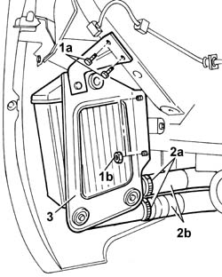

1048B50 turbo charger intercooler - r + r
- Path
- Procedures > 10 ENGINE UNIT > 1048 ENGINE AIR SUPPLY CIRCUIT > 1048B pressure air circuit > 1048B50 turbo charger intercooler - r + r
- Kind
- repair procedure (removal / refitting; the operation number is the code)
- Applies to
- engines: 1.3 JTD 16v; all production periods
- Interactive page
- https://sloeber94.github.io/elrnDB-fPnd/en/#/2752592
Applies to: engines: 1.3 JTD 16v; all production periods
 Removing
Removing
 Refitting
RefittingRemove the car from the ramps.
7055B90 Left front WHEEL ARCH LINER - R.R.
1. Undo the fixing bolts (1a) and the fixing nuts (1b).
2. Open the fastening bands (2a) and disconnect the air pipes (2b).
3. Release the supercharging air/air heat exchanger and remove it.

Applies to: engines: 1.3 JTD 16v; all production periods
Refitting
RemovingFit the supercharging air/air heat exchanger in place.
Tighten the fixing nuts and bolts, fit the pipes in place on the heat exchanger and tighten the fastening bands.
7055B90 Left front WHEEL ARCH LINER - R.R.
Remove the car from the ramps.